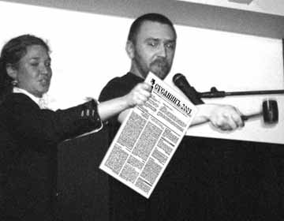

|
«Врать только правду!»
О.Котельников
Прошедший сезон стал «боем над телом Патрокла». Неостывшее тело петербургской культуры последних десятилетий ХХв. тянут в разные стороны и рвут на части. Былое отсутствие рефлексии сменилось мемуарным шквалом, в чем видят знак грядущих репрессий. Навспоминали на много статей: Курсанов спродюсировал сборник «Беспокойники города Питера» (о Свинье, Науменко, Григорьеве, Гоосе, Кривулине и др.) написал «Американскую дырку» о Курехине, о нем же снял передачу Драгомощенко; циклы мемопередач испекли Лурье и Стогов. У последнего вышел «Роман в стиле техно». Автор напомнил рабкора, получившего путевку в закрытое научное учреждение. Имитируя речь непонятных ему людей, он видит в них идиотов или плутов, к тому же, мрущих как мухи. Перлы: «Цой понятие не имеет, как двигаться на сцене. Его обезьяньи ужимки смешны. Советский Союз пал от его визгливого голоса»; «У Котельникова и его японской жены родилась девочка». Лурье с пересыщенным видом глядит на вещи через задний проход. Рейверской «АССОЙ» стала «Корпорация счастья» Андрея Хааса. Е.Андреева, отдавшая должное хиппи и образу Отца, наконец, нашла Гуру, опубликовав в «Критической массе» текст «Время Тимура» и подготовив к печати книгу воспоминаний о нем же «от Циркуля до Айдан». «Героев нонконформизма» выпустила Л.Скобкина. Очередные крупные издания готовят С.Ковальский и И.Кушнир. Публикациями разразились «Афиша», «Петербург на Невском», Наль Подольский, Коровин, Мазин, Ал.Медведев, Хлобыстин и пр. Как легко все переврать, умолчать, передернуть одеяло на себя! Что и считает своей обязанностью «СЪ»
СПРОСИТЕ У Комсомолки!
Правда ли, что ученые смогли воссоздать портрет И.Сусанина?
 Мужчина получился наружности суровой – и как поляки с таким в лес идти не побоялись? Нашли череп мужчины 40-45 лет со следами от ударов рубящим оружием и тупыми предметами. Чтобы узнать, как выглядел знаменитый проводник, обратились к оренбургскому специалисту – замначальника обл. бюро судмедэкспертизы В. Филиппову. «Это Иван Сусанин. Я почему-то в этом уверен, - говорит Филиппов. ДНК в костях не сохранилось, и сравнить биологический материал останков с ДНК потомков Сусанина невозможно».
Мужчина получился наружности суровой – и как поляки с таким в лес идти не побоялись? Нашли череп мужчины 40-45 лет со следами от ударов рубящим оружием и тупыми предметами. Чтобы узнать, как выглядел знаменитый проводник, обратились к оренбургскому специалисту – замначальника обл. бюро судмедэкспертизы В. Филиппову. «Это Иван Сусанин. Я почему-то в этом уверен, - говорит Филиппов. ДНК в костях не сохранилось, и сравнить биологический материал останков с ДНК потомков Сусанина невозможно».
«Комсомольская Правда»,
11-18 мая
СУСАНИН С МОЛОТКА
На художественный аукцион в пользу больных детей журнала «Афиша» «СЪ» предоставил свои сочинения (лот №4, старт. цена 1000р). Наливали прямо во время торгов, что вызвало резкий скачек цен. Когда шквал ажиотажа докатился до «Съ», певец-интеллигент Шнуров, постукивавший молотком, заявил: «А этот лот я снимаю с торгов и приобретаю его сам за 8000 р!»

Теперь «Неполное собрание сочинений И.О. Сусанина» покоится в золотом переплете в офисе «Шнурок», недавно созданном в стиле балетного класса профессором Масловым на ул. Пушкинской.
Лот & дочери
ЗАПАХИ БАРА
Из тех, кто уже умер, наверное, Сусанин героящий. Иван Сусанин, по-моему, как раз такой. Злейший, глупейший, гнуснейший человек, который много пьет и писать не умеет. Всегда теряется.
Антон Белянкин.
«Pulse»
|
ВЕРНИСАЖИ, ВЕЧЕРИНКИ, ФУРШЕТЫ
|
|---|
ККК
Концептуализм, Колеса, Кораблик – характеристики вернисажа графики «Смысл жизни» в Мраморном дворце. Спонсором выставки выступила фармацевтическая фирма PLIVA, но вполне безумная публика (чего стоила одна желтая кофта А.Д.Боровского), таблеток не получила. Название невнятной по содержанию выставки раскрыл фуршет под задницей коня Александра III. Устрицы, мидии, омары, французские сыры, антипаста, хамон, шампанское Moet и пр. – такого местная публика припомнить не могла. Когда после фуршета направились кататься на кораблике, многих уже канчало. На судне безудержно потчевали текилой с макаронами. Кораблик пять раз повторил один и тот же пируэт – от Эрмитажа до тюрьмы «Кресты» и обратно. На что намекала эта акция? Может быть, у распорядителя заплыва - крупного руководителя современного искусства Сени Михайловского от успеха закружилась голова, а может быть, он настаивал на бренности земных радостей. В заключении устроителей рвало салютом со Стрелки ВО!
Мочебуйцев-Труполовов
НОВЫЕ ПАРАЗИТЫ
Всем известен феномен «Бутербродной критики». Физиономии деятелей культуры, снующих по вернисажам в поисках халявы, давно примелькались. Впервые заявила о себе группа «Протез», сделавшая подъедание программой своего творчества. Их манифест стилизован под речь беспризорников: «МЫ ПРИШЛИ ПОЖРАТЬ! Нам на хуй не нужно искусство. Мы посещаем выставки с целью нажраться и напиться на халяву. Колбаса ценнее ебаных произведений. Продолжайте делать свое искусство, что бы у нас был повод жрать. Межерицкий, Вилкин, Ющенко». Подъедающие группируются вокруг галереи с честным названием «Паразит», присосавшейся к «Борею» в лазе, где разбиваются лбы.
В. Похлебкин
РАСКРАСАВИЦА КАРТОШКА
Истинно руское хлебосольство проявил ГРМ на вернисаже Филонова. На террасе со стороны Михайловского сада под звуки авангардного джаза, столь любимого Павлом Николаевичем, предлагались разнообразные картофельные закуски. Наверное, вспомнили о признаниях любви к этому овощу в письмах голодавшего художника, или подчеркивали сходство многочисленных голов в его картинах с клубнями на грядке. На кораблике петербуржцы и москвичи, зачастившие на местные открытия после перебоев с вином, слились в пьяном экстазе.
К. Суп-Ревматизмов
ДЕ КУНИЛИНГУС
«Золотой дождь», падающий на Эрмитаж, благодаря выставкам совр. искусства, не всегда сказывается на качестве фуршетов. Жалким, как и сама живопись престарелого Де Кунинга оказался прием в честь открытия его выставки. В жаркий солнечный день, толкаясь в темном, душном помещении, приглашенные накачивались алкоголем практически без закуски. Тем не менее, русская публика, бодро выстраивалась подлизываться к Пиотровскому и утюжила изнемогавших иностранцев.
Б. Утюгон
ДВА АВТОПИЛОТА
Событием лета стало открытие А.Белянкиным второго суперуспешного алкобара «Фидель», рядом с амортизированной «Дачей». В поддержку блеющего Кастро там состоялся концерт «Внезапного Сыча», где Кеша, почему-то выступил в поношенном нижнем женском белье и с накладным носом.
П.М. Персов
В СУХУЮ
Галерист О.Кудрявцева («Д-137») и художник Г.Гурьянов побывали на Виски-пати. Но им не было суждено отведать этого сомнительного напитка. Увидев, что за столиком на их местах расположилась галерист М.Гисич («Марина Гисич») со спутником, они немедленно покинули собрание.
В. Бибигонова
ХЛЕБНУЛИ РЕЙВА
После концерта «Sparks», часть разгоряченной публики во главе с Ю.Виноградовым и О.Назаровым, отправилась дотанцовывать на кораблике в сопровождении DJ Пуго, Примата и Венсента Вега. Судно раскачали так, что организаторы, танцоры и несколько столов оказался за бортом. Окунувшихся пришлось тянуть к борту на канате.
Д.Ж. Байкало-Амуррский
СПб В МОСКОВСКИХ СЕТЯХ
http://forum.rsuh.ru/archive
Жак а кто был в Музее Фрейда? А на Пушкинской 10? а у Митьков? а в Музее Арктики и Антарктики (полный сюр)?
Плюшкин Мсье Жак, перечень звучит завлекающе. Поведайте миру об этих заведениях.
Жак У музея Фрейда есть свой сайт. «Митьки -ВХУТЕМАС» - на пятом этаже. Найти его человеку неопытному трудно. Пушкинская 10 - культурный центр питера - пять минут от московского вокзала. Музеи - малопосещаемые - но о- ч-ч-ень необычные))))
La Rosa Вот музеи - пока самое интересное, что там есть :)
XSteel город какой-то серый и очень медленный.
Анечка Питер - потрясающий город!! Удивительно красиво там, и люди замечательные.
Mildred В Питер только на праздники ездить можно, там грязь жуткая. Чтобы урну найти надо день потратить. Ходишь как дурочка с бумажечкой в ручке. Вы бывали в Питерских коммуналках? В Москве таких уже нет! Экзотика блин
Анечка Странно, я как раз удивлялась - сколько на Невском урн. В центре Питера было цивильно ещё когда в Москве е! помойки доходили до Красной площади :( А вот «колодцы», действительно навевают ужас. Можно ахать: «как же тут люди живут?» пробок на дорогах немного - это вызывает чёрную зависть. Пора открывать общество фанатов Питера.
S-Irin А у кого ты на пушкинской был?
Жак В арт-полигоне у ТИМУРА, в Буржуазии, в ФИШКЕ ну и т.д. Фрейд замечательно - все более переходит в тусовочное место, а у Тимура перед самой его кончиной вся его компания уже полтора года назад переместилась на Литейный
S-Irin Подожди-ка, куда это на Литейный они переместились?
Жак На Литейном квартира-мастерская Тимура.
S-Irin Не часто в рагу встречаются люди, даже на истории искусства, которые имеют представление о том, кто такой Тимур. А кого ты из этой тусы знаешь?
Жак Много кого знаю - и Алексея Медведева и Ольгу Тобрелутс и Ивана Хлобыстина и т. д. Странный надобно сказать этот неоакадемизм.
S-Irin У меня мать недавно из питера вернулась. Встречалась с Машей (в смысле дочкой Тимура). Она ей дала работу Тимура, чтобы матерь ее в третьяковку привезла. Только на мои уговоры показать ее, говорила: «Вот еще, буду я разворачивать.» Откуда ты эту компанию знаешь?
Жак Подарил мне он работу посвященную фашисткому архитектору Крейсу. В Третьяковке уже три его ранних работы висят.
Tsurika Я ездила с религиоведами на практику. Познакомились с русскими зороастрийцами, с отцом Хосе, побывали в иеговистском «Вефиле», у саентологов, в Музее Истории Религий, в буддийском храме и кришнаитском кафе. Это было здорово! Обязательно поеду туда еще не один раз.
maestroot Культурная столица для бомжей!!!! Нифига там нет кроме музеев, а какие угнетающие дома. В Москве есть спальные районы, а Питер енто 1 БААльшой спальный район. не че го там сопли морозить!!!
|
ПАННИЧКА В ЭРМИТАЖЕ
Общественность потрясена: пресс-служба Эрмитажа объявила о появлении в музее искусствоведов-оборотней. Очагом нечести стали залы скифских мумий Пазырыка. Там выставляются художники, открыто признающие себя колдунами. Зараза быстро распространилась этажом выше, на раздел русского искусства. В 2005 г. от укуса старухи Луиз Буржуа, запустившей в музей своих пауков и фаллических монстров, на рабочем месте скончалась хранитель русского фонда. Сейчас от сотрудников ГЭ пахнет чесноком, во внутренние дворы завезены фуры с осиновыми колами, батальон вневедомственной охраны наблюдает за египетской мумией. Есть опасения, что оборотни проберутся в другие отделы, в особенности, в создаваемый в Главном Штабе Отдел современного искусства. Открытие новой структуры станет сигналом для массированной атаки музея упырями, художниками-животными и пр. монстрами, правящими бал в мировом актуализме и давно облизывающимися на главный музей России. В Штабе уже видели призрак родившейся там Лу Андреас-Саломе, погубившей Ницше, Рильке и группу фрейдистов. Спасая залы третьего этажа Зимнего дворца, где экспонируется Импрессионизм, Матисс, Пикассо и др. шедевры коллекций Щукина и Морозова, их собираются вывезти в Москву, в ГМИИ им. Пушкина.
О.Т. Закатов, Д.О. Рассветов
СОШЕСТВИЕ В ААД
Ветеран нонконформизма, родившийся в концлагере художник внутреннего сгорания Люциан Долинский, попытался вновь спустить на воду Ковчег «Свободная Культура-Пушкинская-10». Отправляясь в плаванье, он не закрывал кран, подтапливая младононконформиста Лешу Чистякова, пишущего внизу абстракции для мебельных салонов. Совет избранников нонконформизма, довольных качеством коньяка «Арарат» в «24 часа» на углу, с якоря сниматься не собирался. Посему приняли соломоново решение, и поменяли Долинского с Чистяковым местами. Теперь Чистяков ходит чистеньким, моясь в ванне Долинского, а последний, лишенный санузла, бредет, потупя очи долу в общий туалет через коридор.
Н.Е. Ной
ПЕРЕГНОЙ
По вечерам петербуржцы утыкаются в «Культурный слой» 5 канала. Позиция авторов передачи вызывает недоумение. Так, в программе, посвященной певцу «Кино» Цою, присутствовал кто угодно, кроме трех здравствующих музыкантов группы. Выступавшие деятели московского рока, названные Цоем «шутами», именовали героя пэтэушником и деревенщиной. Другая передача, посвященная истории петербургского радио формата FM, заканчивалась словами: «к 97г. радио в СПб потеряло своеобразие и творческое начало». Таким образом, в историю попали китчевые «Европа+» и «Модерн», а совершившие революцию «Рекорд» (1997) и «Порт» (1997) попросту не существовали. Так чью же ниву унаваживает «Культурный слой»?
Г.Р. Дриста
P.S. Главными героями сюжета о параллельном кино на канале СТС стали братья Олейниковы и Юхананов. О ленинградцах Юфе, Дебиле, Мертвом и пр. зачинщиках беспредела в киноандерграунде в ужасе умолчали.
ЗВЕРИНЫЙ СТИЛЬ ВОЗВРАЩАЕТСЯ
Министерство финансов ввело в оборот банкноту достоинством 5000р. Для защиты от поделок, на далеких берегах Амура, изображенных на купюре, нанесены микроизображения зверей: медведей, тигров, ослов и даже слонов.
З. Оскал
ШАЛЬНЫЕ МИЛЛИОНЫ
В Нью-Йорке Sotheby’s и Сhristie’s наторговали русским искусством на $70лн. Если бы в цифрах прослеживалась хоть какая-то логика! Почему художник, год назад проданный за миллион, сегодня стоит сто тысяч? Почему в лидеры попадают малоизвестные авторы (вроде грузина Габашвили), в то время как национальные герои (вроде Репино или Родченко) продаются за бесценок. С голыми девицами объяснений не требуется – сколько бы Серебрякова ни шлепала сексай настопильных «нюшек», они будут продаваться лучше. Провал современных художников вызвал в кругах Москвы настоящий траур: если авторы не востребованы в NY, значит, не такие уж они крутые, несмотря на биеннали. Если следовать прейскуранту торгов, получится, что лучший русский художник – грузин Габашвили.
Милена Орлова «Ъ», №78
ПОГАНЕЦ
О вещах, подтверждающих причудливые взаимоотношения вымысла и действительности, поведало центральное ТВ. Большевики купили знамя Парижской Коммуны и поместили его в Мавзолей. Знамя оказалось заражено грибком, который поразил все ткани мумии. Эта засекреченная пакость стала головной болью советских ученых на многие десятилетия. Казавшееся бредом в конце восьмидесятых курехинское «Ленин был грибом» оказалось правдой!
Спецкор «Съ» Е. Андреева
ОДЕТТА?
Прошлым летом ночью по городу носился отряд сильфид на роликах, возглавляемый Светой Островой. В этом году известная затейница продолжила свой почин. Только теперь платья у девушек не белые, а черные.
П. Зигфрид
НЕ, РОДИСЬ КРАСИВОЙ!
В Доме Кино состоялась премьера фильма «Волга-Волга-2». Вся хохма строится на одной звезде – Мамышеве-Монро и одном гэге – поверх головы Орловой компьютером прилепили фейс Монро. Владислав синхронно произносит, но дигитальная башка съезжает набок и сворачивается к заднице. Не смотря на гениальность Мамышева-Орло и бездарную современную режессуру, Александров вытянул свой фильм.
Любовь Мурлова
ОТВЕДАЙТЕ-КА СВИНЦА!
Чиновники Еврокомиссии добрались до И.С.Баха. Любители музыки оказались перед перспективной ездить в Россию, чтобы насладиться величайшим гением. ЕС запрещает использовать электрические механизмы, если они содержат более 0,1% свинца. В современный орган воздух подается электромотором, он объявлен «электрическим механизмом» и подпал под санкции. Демонтажу подлежат все органы Евросоюза. Свинец - половина состава труб «короля музыкальных инструментов». Он обладает особыми свойствами в отражении звука, придавая ему глубину и силу.
ИТАР-ТАСС
P.S. Общество любителей старинных инструментов «Сопелка» уже подало заявку на закупку списанных органов для размещения их в пос. Ленобласти: Сусаннино, Чаплино, Шум, Пуккелово, Лопухинка, Верхние Никулясы, Лаврики, Лужа, Пейчало, Кончала, Горгала, Войбокало, Гнори, Пиргора, Концы и др.
ПОЛУСУХОЙ РЕНЕССАНС
Известно, что алкоголь является важнейшим компонентом художественного процесса. Полусухой закон, в создании которого правительство обвинило МИНФИН и ФСБ, лишил художников качественного вдохновения, даваемого французскими винами, толкнув их обратно в объятия Советского Шампанского. На этом фоне усилили свою работу старорежимные забегаловки: в подвале на углу Восстания/Жуковского, Пушкинской/Кузнечного, Стремянной/Марата и на Гончарной у Московского вокз. Возродились пьяные углы; а таксисты вновь торгуют водкой.
К.Б. Сухой
СТРАСТИ ПО «ЗОЛОТОМУ ЛАПТЮ»
ЮРИЙ ТЕМИРКАНОВ ДЛЯ «РОССИЙСКОЙ ГАЗЕТЫ»
13 лет Вы отдали Мариинке. Проект второго зала вам понравился?
- То, что сделано - варварство. Я это Гергиеву обязательно скажу. Англичане, конечно, менее культурны, чем россияне. В Лондоне тоже была проблема с «Ковент-Гарденом». Но они лишь сдвинули его на два сантиметра, а XXI век сделали внутри! А мы доверяем строить в Петербурге человеку, который здесь никогда не был! Парижская Гранд-Опера - тоже старое здание. Но перестраивать не стали - стали строить новую оперу. Это будет грязное стеклянное пятно, которое наверняка никто мыть не будет! Никто не мешает построить ее в пригороде, как поступают в других странах. Нельзя разрушать великий город ради чьих-то амбиций.
Вы видели шемякинского «Щелкунчика»?
- Нет, я же всегда в отъезде. Но мне кажется, Чайковский лучше всех знал, каким должен быть его «Щелкунчик». Учить Чайковского, трактовать его - не очень хорошо. Венера Милосская сегодня многим кажется толстоватой - почему же ей не срезают лишнее? А музыку почему-то берутся улучшать. Если вам неинтересно то, что хотел показать Чайковский, - не ставьте! Сядьте и напишите сами, если вы такие талантливы.
|
НОВОСТИ ФИЗИЧЕСКОЙ КУЛЬТУРЫ
|
|---|
ЧМ О:О
Чемпионат Мира по футболу вылился в фарс. При «новом судействе», победы достигались подсуживанием и ошибками рефери. Не отставали от судей и футболисты симулировавшие, дравшиеся и обзывавшие др. др. «шлюхами» и «террористами». Из-за футбола человечество разочаровывается в справедливости. Сразу после окончания ЧМ 13 игроков итальянской команды-победительницы предстали перед следствием о договорных матчах. Ведущий клуб Интер переведен во второй дивизион, президенту Бразильской федерации футбола грозит 10 лет тюрьмы, а футбольные чиновники получат взятки до €2,8 млн.
Витторио Мизиани
СБОРНАЯ Чемпионата Мира «СЪ»
Полевые игроки: Кака (Бразилия), Срна (Хорватия), Фигу (Португалия), Масад (Сауд. Аравия), Пим-Понг (Гана), Йапи-Йапо (Кот д’Эвуар), Воробей, Воронин, Гусин, Гусев (Украина); вратарь Шикельгрубер (Австрия); запасные: Локо (Ангола), Враньешь (Хорватия), Несмачный (Украина), Калаччинья (Аргентина), Бабадинья (Парагвай), Баста (Сербия и Черногория), Пршо (Хорватия).
ДУМАЯ ПОПАСТЬ В ОВЧАРНЮ ПОПАЛ НА ПСАРНЮ
По невыясненной причине Экспертный совет работников культуры в лице Г.Орлова, Л.Кучер (МНИ), Г.Ершова, А.Клюканова (Navicula artis), О.Котельникова («Японская неделя»), А.Хлобыстина (ПАиБНИ), К.Саттон (США) и др. (всего 17 чел.) вместо Кировского театра попал на стадион Кирова. Совет был обескуражен низкой культурой:
1.обслуживания, предоставляемой работниками милиции
2.игры команды «Зенит»
3.речи болельщиков.
От пережитого стресса члены комиссии раскрасили лица, начали нецензурно выкрикивать, напились и разбрелись по городу. Решением Ассоциации Поддержания Чрезвычайных Художественных Инициатив (АПЧХИ) Экспертный совет был расформирован.
Лю Бо Рисов
БОЕВОЕ ИСКУССТВО
В XL состоялся перформанс Е.Ковылиной Boxing. Поединки, на которые перформансистка вызывала всех желающих, продолжались до первой крови. На ринг поднялся автор Большого словаря Мата А.Плутцер-Серано – мужчина внушительных габаритов и к галантности не склонный. Если бы не рефери, ситуация могла выйти из-под контроля – Ковылина отправилась в нокдаун и получила разбитую в кровь губу. Когда желание сразиться изъявил зверского вида мужик, назвавшийся Дэном, госпожа Ковылина сочла за лучшее сказать, что без боя оставляет победу за соперником.
Ирина Кулик, «Коммерсант», №181
УБОГОСТЬ ПРОТИВ БЕДНОСТИ
При музее АААхматовой открылась выставка «Искусство против бедности», приуроченная к Г-8. 2 недели мастерскласса понадобилось русским и немцам, чтобы засрить музейный сад. Комок черного полиэтилена назывался «Нефтяной паук», картонные коробки – «Жилище бездомных», железные бочки - тема захоронения ядовитых отходов и т.п. банальности. Мусор давно стал стилем «протеста» сотен мероприятий, где «художники» готовы освоить любые деньги, сляпав фигню на постном масле. Единственная удача шоу - сидящие за столом переговоров 8 больших пенопластовых пингвинов А.Рудьева. На вернисаже развернулась стриптиз-акция «Снимаем бедность». Довольная молодежь хлопала шампанским; бомжей не наблюдалось. О размерах средств, пошедших на создание этого хлама, организаторы скромно умолчали. Так «сосущие вместе» шампунь, не лазя на рожон, отбивают бабки. Можно не сомневаться, что вскоре те же «антиглобалисты» будут млеть в Эрмитаже на первом объединительномсъезде глобалистов и фарцовщиков, посвященном арт-рынку, где выступят: Т.Кренц, Н.Сирота, А.Вейнберг, Н.Розенталь, М.Киммелман, Х.У.Обрист, А.Боровский, Д.Люксембург, К.Бизенбах, Д.Дейч, Б.Горви, Д.Рубелл, Н.Раух, С.Африка, А.Ротенберг, И.Бакштейн, О.Туркина, Н.Молох и пр.
Владимир Иличленин
МОРДУ В ЖОПУ ПРЕВРАТИЛИ
В свое время Хармс писал: «по мне, что стол, что шкап, что букашка - все едино». Сегодня православное всеединство и языческое оборотничество захлестнуло русский антикварный рынок. На вопрос «Ъ»: «Кого подделывают?» эксперт В.Петров отвечает: «от Алисова и Акулова до Якоби и Ярошенко. Пейзажи Айвазовского делают из французов и итальянцев; Орловского, Клодтов - из датчан и немцев. Боголюбова и Лагорио – из английских и скандинавских маринистов. «Шишкиных» немало – используют художников дюссельдорфской школы. Впервые национальный художник в сто раз дороже зарубежного мастера. Большинство из этих работ имели экспертизу Третьяковской Галереи».
«РАДИ ЛЮБВИ К ВАМ ПОШЕЛ Я НА МУКИ…»
Внешкор «Съ» нашел в мусоре документ, отвергнутый народным ансамблем «ДДТ»:
«Передвижение между городами группы ДДТ допускается только на автобусах класса «ЛЮКС» (Мерседес, Вольво, Неоплан, Скания и т.п.), с обязательным наличием туалета, кофеварки, видео и т.д. ЗАКАЗЧИК обязан исключить наличие спиртных и слабоалкогольных напитков на всех мероприятиях ДДТ. Обратить особое внимание, чтобы во всех номерах было наличие исправных: душа, туалета, кроватей, телевизора, телефона, и чистого постельного белья. В № ЛЮКС должно быть: электрофен; электрочайник европейского качества; чай «ЛИПТОН» в пакетиках, кофе «НЕСКАФЕ ГОЛД»; сахар-песок, лимон, питьевая вода (в пятилитровом баллоне) – 3 шт. ЗАКАЗЧИК обеспечивает ДДТ питанием. Место приема пищи должно быть изолировано от посетителей и посторонних. Фото и Видеосъемки на фоне барных стоек и т.п. – ЗАПРЕЩЕНА!!!».
Андрей Панов
ДЕРЬМО СЧИТАЛОСЬ ПЕРФОРМАНСОМ
Основоположница перформанса М.Абрамович рассказала, что коммунизм научил ее самодисциплине, а религия – духовности. «Перформанс - это мучительные испытания: от многочасового терзания волос железными щетками, до вырезания на теле звезды и тесного общения с дюжиной змей. Перемыла гору окровавленных костей со скотобойни. Кончилось тем, что на меня направили заряженный пистолет. Больше всего перформансов было в 70-е гг., и больше всего плохих перформансов. Любое дерьмо считалось перформансом. К 80-м все плохие перформансисты стали плохими живописцами».
«Коммерсантъ», №34
|
ХУДОЖЕСТВЕННАЯ БЕЗОПАСНОСТЬ
|
|---|
СУВЕРЕННОСТЬЮ В ЗАВТРАШНЕМ «ДНЕ»
Растет безопасность Пушкинской-10. К стальным дверям и кодовым замкам прибавляется так называемый «пояс нонконформиста». Из аппендиксов у входа, ранее служивших отхожими местами, созданы зверинцы-ловушки. Вместо широкого парапета на лестнице, бывшего местом распития – жесткая чугунная жердочка. Штукатурке на стенах придан острый, режуще/колющий рельеф, не позволяющий прислоняться и развешивать афиши. Некоторое беспокойство у обитателей вызывают широкие колоды (правда, еще без топоров), устанавливаемые на лестничных площадках.
Н.Е. Ссытин
ОБРАЗ ОРГАНОВ
До 1 октября ФСБ России учреждает конкурс на лучшие произведения литературы и искусства о деятельности своих органов. Осуществляется отбор произведений, в которых на высоком художественном уровне создан положительный образ сотрудников органов безопасности и членов их семей. В заявках указываются фио автора, место работы, судимости, домашний адрес, контактные телефоны. Итоги конкурса подводятся в декабре 2006г. Лауреатам вручаются знаки, дипломы, денежные премии и ценные подарки. Конкурсные работы направляются по адресу: 101000, Москва, Лубянская пл., 2, Центр общественных связей ФСБ России. Тел. (495) 914-39-08, факс (495) 625-05-78
ГУГАБУ-ХАЙДАБИ!
Близится главная акция глобалистов – открытие Гуггенхайма в Абу-Даби (ОАЭ). Первый «Гугга-ленд» в мире ислама станет форпостом демократии на Востоке. Полагают, что шедевры свободного мира, типа «Мадонна из слоновьего дерьма» Муница, «Обоссаный Христос» Серрано, «Пяточек угощает друзей» Кулика, «Большой американский член» Мейпелторпа и «Дигитальные пизды» феминисток из WNS-matrix найдут живой отклик у мусульман. Для защиты музея от фанатиков традиционной художественной ориентации его размещают на острове, а стены делают из титановых сплавов. Новый «Хаим», как любовно именуют его арабы, станет самым большим из пяти подобных Мак-Хаймов в NY, Венеции, Берлине, Лас-Вегасе и Бильбао.
Ф-Т. Хери-Хренц
|